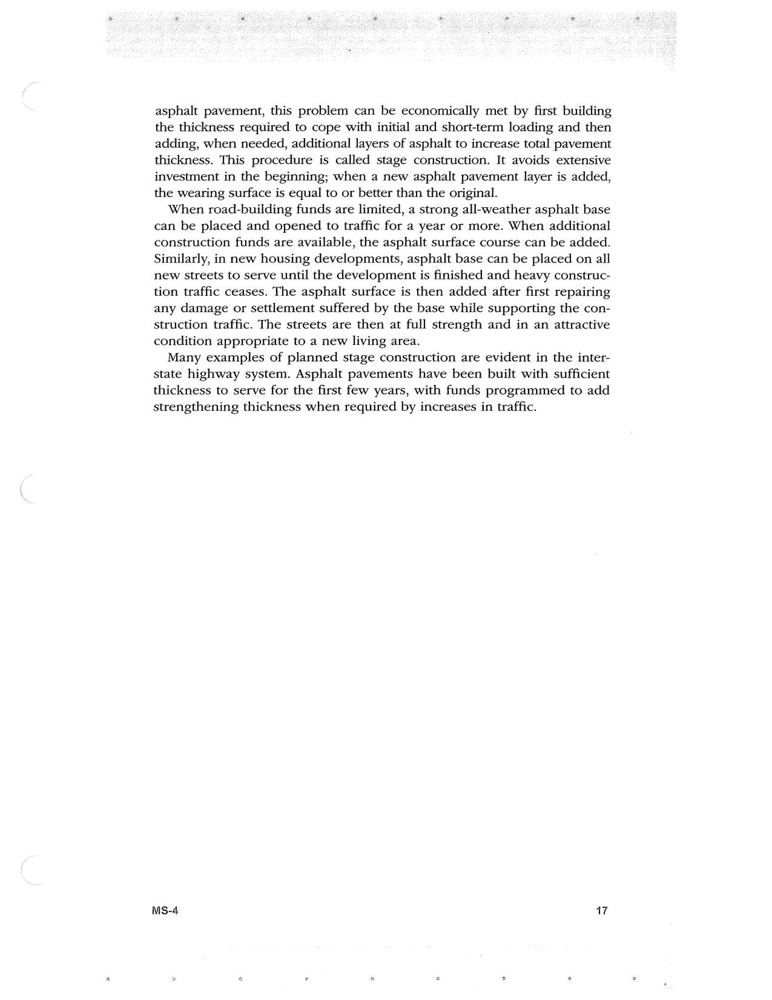

PDF page 51 · book page sequence 17


Searchable transcription
Unproofread OCR · 214 detected words; mean OCR confidence 96.27. Check technical values, symbols and table columns against the scan.
asphalt pavement, this problem can be economically met by first building the thickness required to cope with initial and short-term loading and then adding, when needed, additional layers of asphalt to increase total pavement thickness. This procedure is called stage construction. It avoids extensive investment in the beginning; when a new asphalt pavement layer is added, the wearing surface is equal to or better than the original.
When road-building funds are limited, a strong all-weather asphalt base can be placed and opened to traffic for a year or more. When additional construction funds are available, the asphalt surface course can be added. Similarly, in new housing developments, asphalt base can be placed on all new streets to serve until the development is finished and heavy construc- tion traffic ceases. The asphalt surface is then added after first repairing any damage or settlement suffered by the base while supporting the con- struction traffic. The streets are then at full strength and in an attractive condition appropriate to a new living area.
Many examples of planned stage construction are evident in the inter- state highway system. Asphalt pavements have been built with sufficient thickness to serve for the first few years, with funds programmed to add strengthening thickness when required by increases in traffic.
MS-4 17